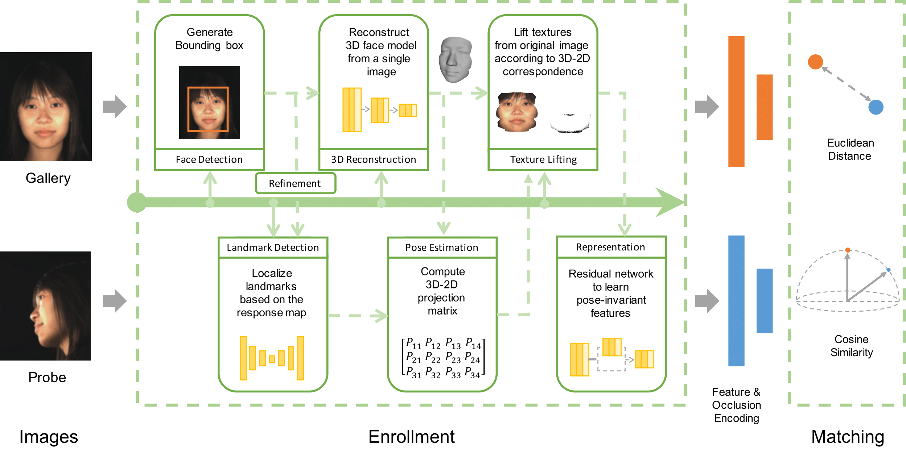
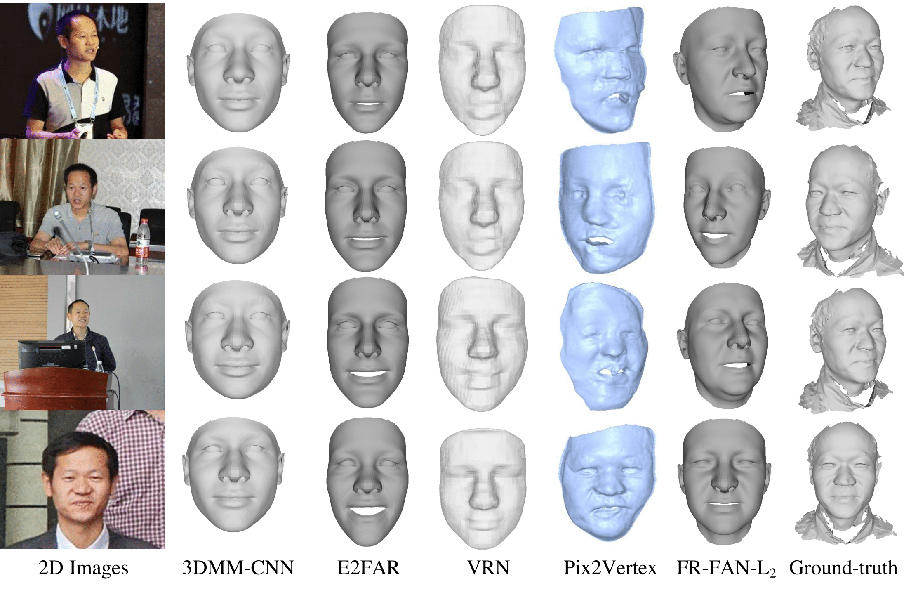
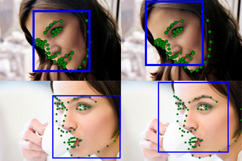
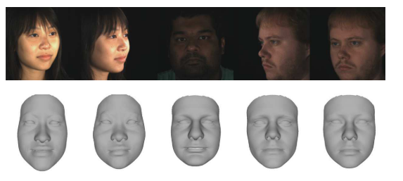
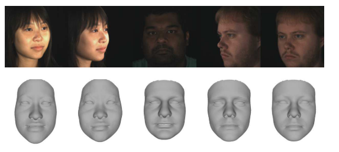

Welcome
I am a Ph.D. candidate advised by Prof. Ioannis A. Kakadiaris at the University of Houston. Before arriving at UH, I received B.Eng. in Beijing University of Posts and Telecommunications. My research is mainly focused on Computer Vision, Deep Learning, Machine Learning, Biometrics, and Face Recognition. I have worked on several projects covering a wide range of topics such as Face Detection, Face Alignment, 3D Face Reconstruction, and Face Recognition. In CBL, I lead the development of a deep learning based 3D-aided 2D face recognition system. Additionally, I have two wonderful summer internship experiences in Amazon AI. You can find more projects and experiences in my resume.
My expected graduation time is May, 2019. Right now, I am looking for full-time industry research and engineer oppotunities on Computer Vision and Deep Learning.
Download my ResumeAnouncements
-
Aug. 2018One paper accepted as Oral in BTAS 2018Our paper "SSFD: A Face Detector using a Single-scale Feature Map" is accepted as Oral in BTAS 2018
-
Aug. 2018One paper accepted in ECCV 2018Our paper "Deep Imbalanced Attribute Classification using Visual Attention Aggregation" is accepted as Poster in ECCV 2018: [Paper]
-
Jun. 2017One paper accepted in IJCB 2017Our paper "Evaluation of a 3D-aided Pose Invariant 2D Face Recognition System" is accepted as Poster in IJCB 2017
-
Jan. 2017One paper accepted in FG 2017Our paper "Joint Head Pose Estimation and Face Alignment Framework using Global and Local CNN Features" is accepted as Poster in FG 2017
-
Feb. 2016One paper accepted in ISBA 2016Our paper "Face alignment via an Ensemble of random ferns" is accepted as Oral in ISBA 2016
-
Jun. 2015One paper accepted in BTAS 2015Our paper "Towards fitting a 3D dense facial model to 2D image without landmarks" is accepted as Poster in BTAS 2015
Experience, Honors and Awards
-
May 2018Applied Scientist Internship at Amazon AI, Seattle, WAApplied Scientist Internship at Amazon AI on Deep Learning and Image Classification
-
Oct. 2017Doctoral Consortium in IJCB 2017Selected participate in Doctoral Consortium in IJCB 2017
-
May 2017Doctoral Consortium Travel Grant in FG 2017Selected participate in Doctoral Consortium with a travel grant in FG 2017
-
May 2017Applied Scientist Internship at Amazon AI, NYApplied Scientist Internship at Amazon AI on Deep Learning and Time-series Forecasting
-
Oct. 2013Google Android Application Development Challenge2nd Award in Beijing Area and 3rd Award
Research Summary
My research is focused on computer vision, machine learning, and deep learning. As a Research Assistant at the University of Houston, my research is addressing on face recognition in the presence of viriances of pose, expressions, and occlusions.
-

A few well-developed face recognition pipelines have been reported in recent years. Most of the face-related work focuses on a specific module or demonstrates a research idea. The modern well-designed face recognition pipelines that can work in the real life is even less. In this paper, we present a pose-invariant 3D-aided 2D face recognition system (UR2D-E) that is robust to pose variations by leveraging deep learning technology. We describe the architecture and the interface of UR2D-E, and introduce each module in detail. Experiments are conducted on the UHDB31 and IJB-A, demonstrating that UR2D-E outperforms existing 2D face recognition systems such as VGG-Face, FaceNet, and a commercial off-the-shelf software (COTS) by at least 9% on UHDB31 and 3% on IJB-A dataset on average. It fills a gap by providing a 3D-aided 2D face recognition system that has compatible results with 2D face recognition systems using deep learning techniques.
Related Publications
- X. Xu, H. Le, P. Dou, Y. Wu, and I. A. Kakadiaris, “Evaluation of a 3D-aided Pose Invariant 2D Face Recognition System,” in Proc. International Joint Conference on Biometrics, Denver, CO, Oct. 1-4, 2017.
-

The goal of this work is to seek principles of designing a deep neural network for face reconstruction from a single image. To make the evaluation simple, we generated a synthetic dataset with 10,000 identities and used a part of it for evaluation. We applied extensive experiments using an end-to-end face reconstruction algorithm using E2FAR and its variations, and analyzed the reason why it can be successfully applied for 3D face reconstruction. From the comparative studies, we conclude the feature aggregation from different layers is a key point to training better neural networks for 3D face reconstruction. Based on these observations, a face reconstruction feature aggregation network (FR-FAN) is proposed, which obtains significant improvements compared with all baselines on the synthetic validation set. We evaluate our model on existing popular indoor and in-the-wild 2D-3D datasets. Extensive experiments demonstrate that \name performs statistically significantly better than the existing state-of-the-art algorithms on several datasets. Finally, the sensitivity analysis is performed on controlled datasets demonstrates that our designed network is robust to large variations of pose, illumination, and expressions.
Related Publications
-

We explore global and local features obtained from Convolutional Neural Networks (CNN) for learning to estimate head pose and localize landmarks jointly. Because there is a high correlation between head pose and landmark locations, the head pose distributions from a reference database and learned local deep patch features are used to reduce the error in the head pose estimation and face alignment tasks. First, we train GNet on the detected face region to obtain a rough estimate of the pose and to localize the seven primary landmarks. The most similar shape is selected for initialization from a reference shape pool constructed from the training samples according to the estimated head pose. Starting from the initial pose and shape, LNet is used to learn local CNN features and predict the shape and pose residuals. We demonstrate that our algorithm, named JFA, improves both the head pose estimation and face alignment. To the best of our knowledge, this is the first system that explores the use of the global and local CNN features to solve head pose estimation and landmark detection tasks jointly.
Related Publications
- X. Xu and I. A. Kakadiaris, “ Joint Head Pose Estimation and Face Alignment Framework using Global and Local CNN Features,” in Proc. 12th IEEE Conference on Automatic Face and Gesture Recognition, Washington, D.C., May 30-June 3, 2017.
- X. Xu S. K. Shah and I. A. Kakadiaris, “ Face alignment via an Ensemble of random ferns ,” in Proc. International Conference on Identity, Security and Behavior Analysis, Sendai, Japan, Feb. 29 - March. 2, 2016 (Oral).
Publications
This material is presented to ensure timely dissemination of scholarly and technical work. Copyright and all rights therein are retained by authors or by other copyright holders. All persons copying this information are expected to adhere to the terms and constraints invoked by each author's copyright. These works may not be reposted without the explicit permission of the copyright holder.
Filter by type:
-
2018
SSFD: A Face Detector using a Single-scale Feature Map Conference
In Proc. IEEE International Conference on Biometrics: Theory, Applications, and Systems, Los Angeles, CA, Oct. 22-25, 2018
@inproceedings{Shi_2018_180923,
address = {Los Angeles, CA, USA},
author = {Shi, Lei and Xu, Xiang and Kakadiaris, Ioannis A.},
booktitle = {Proc. IEEE International Conference on Biometrics: Theory Applications and Systems},
month = {Oct 22 -- 25},
title = {{SSFD: A Face Detector via a Single-Scale Feature Map}},
year = {2018}
}
-
2018
Deep Imbalanced Attribute Classification using Visual Attention Aggregation Conference
In Proc. European Conference on Computer Vision, Munich, Germany, Sep. 8 - 14, 2018
@inproceedings{Sarafianos_2018_180921,
address = {Munich, Germany},
author = {Sarafianos, Nikolaos and Xu, Xiang and Kakadiaris, Ioannis A},
booktitle = {Proc. European Conference on Computer Vision},
month = {Sep. 8 --14},
title = {{Deep Imbalanced Attribute Classification using Visual Attention Aggregation}},
year = {2018}
}
-
2017
Evaluation of a 3D-aided Pose Invariant 2D Face Recognition System Conference
In Proc. International Joint Conference on Biometrics, Denver, CO, Oct. 1-4, 2017
@inproceedings{Xu_2017_17643,
address = {Denver, CO},
author = {Xu, X and Le, H and Dou, P and Wu, Y and Kakadiaris, I A},
booktitle = {Proc. International Joint Conference on Biometrics},
month = {Oct. 1--4},
pages = {446--455},
title = {{Evaluation of 3D-aided pose invariant 2D face recognition system}},
year = {2017}
}
-
2017
Joint head pose estimation and face alignment framework using global and local CNN features Conference
In Proc. 12th IEEE Conference on Automatic Face and Gesture Recognition, Washington, D.C., May 30-June 3, 2017
@inproceedings{Xu_2017_17394,
address = {Washington, DC},
author = {Xu, X and Kakadiaris, I A},
booktitle = {Proc. $12^{th}$ IEEE Conference on Automatic Face {\&} Gesture Recognition},
month = {May},
pages = {642--649},
title = {{Joint head pose estimation and face alignment framework using global and local CNN features}},
year = {2017}
}
-
2016
Face Alignment via an Ensemble of Random Ferns Conference
In Proc. IEEE International Conference on Identity, Security and Behavior Analysis, Sendai, Japan, Feb. 29 - Mar. 2, 2016 (Oral)
@inproceedings{Xu_2016_16539,
address = {Sendai, Japan},
author = {Xu, X and Shah, S and Kakadiaris, I A},
booktitle = {Proc. IEEE International Conference on Identity, Security and Behavior Analysis},
title = {{Face alignment via an ensemble of random ferns}},
year = {2016}
}
-
2016
Towards fitting a 3D dense facial model to 2D image without landmarks Conference
In Proc. International Conference on Biometrics: Theory, Applications and Systems, Arlington, VA, Sept. 8 - 11, 2015
@inproceedings{wu2015towards,
title={Towards fitting a 3D dense facial model to a 2D image: A landmark-free approach},
author={Wu, Yuhang and Xu, Xiang and Shah, Shishir K and Kakadiaris, Ioannis A},
booktitle={Proc. IEEE International Conference on Biometrics Theory, Applications and Systems},
pages={1--8},
year={2015}
}
Code
Here, I list some codes or resources I contribute to the research communities.
-
 

Contact Me
I would be happy to talk to you if you need my assistance in your research or you have any suggestions or comments about my work.
- Xiang Xu
- Room 314, HBS1, University of Houston
- Department of Computer Science
- University of Houston
- Houston, Texas, USA
- Web: shownx.github.io
- email: dellsford@gmail.com